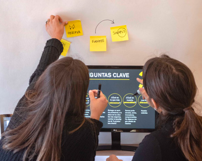
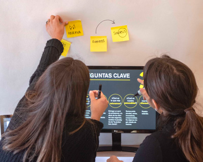
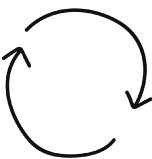
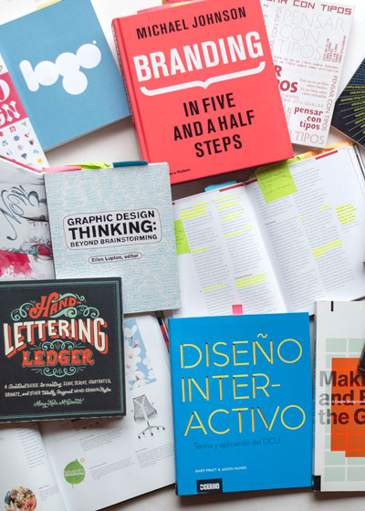
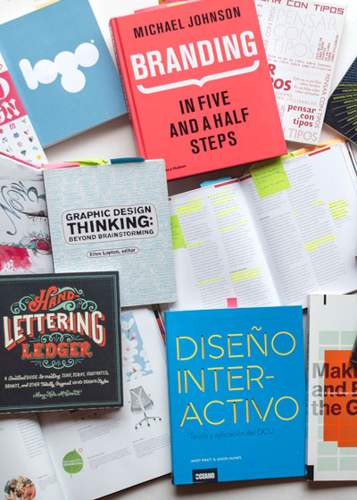
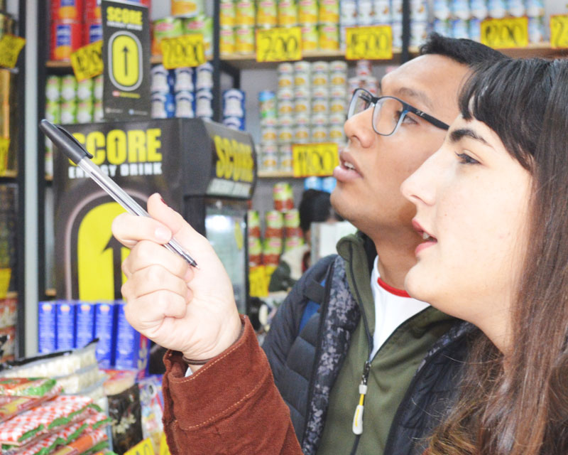
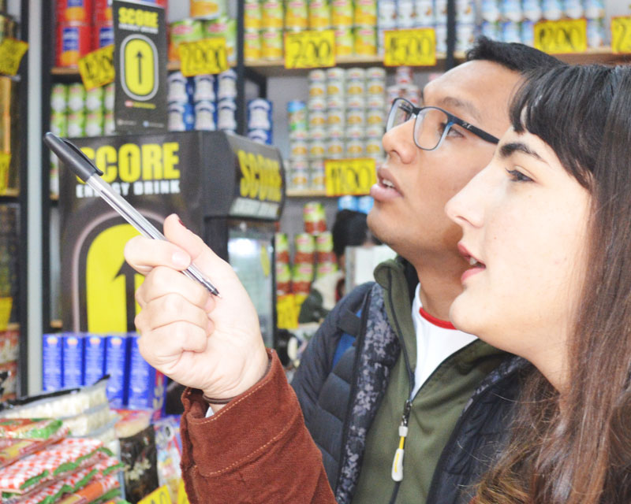
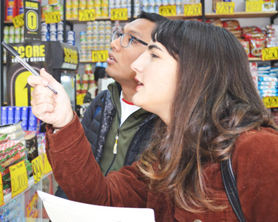
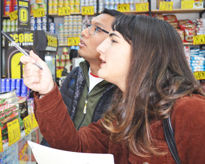

La metodología de Zooma tiene como objetivo sistematizar un proceso de trabajo guiado por herramientas de innovación, que permiten obtener mejores análisis del problema o desafío, generando resultados más efectivos. Proponemos un trabajo flexible, que se va ajustando a los requerimientos de cada etapa del proyecto.
Metodología Zooma


Entender el desafío, conocer al usuario y definir los conceptos que guiarán la propuesta. Observación en terreno.
Analizar tendencias y antecedentes, búsqueda de buenos referentes de diseño. Look and feel.
Etapa de creación en equipo, por medio de técnicas de co-creación e iteración de resultados.
Validar la propuesta, a través de prototipos, visualizaciones y sesiones de co-creación.
Ejecución y materialización del producto / propuesta final para el desarrollo del servicio.
Evaluación del resultado y de nuevas necesidades.
En el desarrollo del proyecto nunca nos faltará
CO-CREAR
Porque creemos que un equipo interdiciplinario puede contribuir de mejor manera a un proyecto, siempre incluiremos en nuestro proceso creativo a nuestros clientes, usuarios y expertos del tema.
 


ITERAR
Nuestra metodología entrega la libertad de volver a pasos anteriores para iterar o re-formular las propuestas entregadas, sumando valor con los nuevos descubrimientos que surgen en el camino.
 

OBSERVAR
A través de técnicas etnográficas, realizamos observaciones en terreno que nos permite empatizar con el desafío y lograr una propuesta que responda a los usuarios correctos.
 

 

Conoce nuestros gurús
ALINA WHEELER
“Una guía esencial para todo el equipo de diseño y de identidad de marca”
ELLEN LUPTON
“Cómo generar ideas a través del Design Thinking y Brainstorming”
THAMES & HUDSON
“Branding en 5 pasos y medio. Cómo crear una identidad de marca”
PRATT AND NUNES
“Teoría y aplicación del Diseño Interactivo”